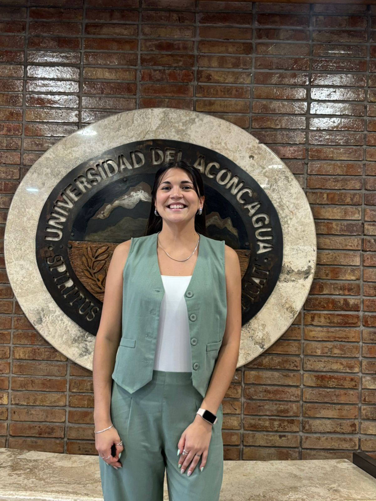

Hola, soy Belén Sepúlveda
Licenciada en Psicología MP 6063
Te acompaño con empatía, paciencia y escucha activa en cada paso hacia tu bienestar. Espacio seguro para niños, niñas, adolescentes y adultos.

Sobre mí
Soy licenciada por la Universidad del Aconcagua, con una profunda vocación por la psicología clínica y la docencia. Mi enfoque principal es brindar un abordaje interdisciplinario y promover el bienestar integral de mis pacientes.
Cuento con una sólida trayectoria en el acompañamiento integral de todas las etapas de la vida. Mi experiencia abarca desde la prevención y atención en niñez y adolescencia, hasta el abordaje clínico especializado en adultos y adultos mayores, promoviendo siempre el bienestar emocional y un envejecimiento activo y saludable.
🌱 Empatía y Paciencia
Respeto el ritmo de cada persona, adaptando las técnicas a sus necesidades y circunstancias.
🗣 Comunicación Clara
Explico conceptos de forma comprensible, ajustando el lenguaje según la edad y contexto.
🤝 Flexibilidad
Capacidad de adaptar el enfoque de trabajo para ofrecer un apoyo verdaderamente necesario y útil.
Áreas de Atención
Espacios terapéuticos diseñados para cada etapa vital
Terapia para niños, niñas y adolescentes
Acompañamiento en salud mental desde edades tempranas, enfocado en el desarrollo, prevención y abordaje integral.
Terapia individual para adultos
Un espacio de escucha activa para acompañarte a transitar tus desafíos actuales y redescubrir tu bienestar en un entorno de confianza.
Apto psicológico
Evaluaciones profesionales para trámites laborales, académicos o personales con un enfoque ágil y humano.
Formación
Formación en Terapia Sistémica Infanto Juvenil
Instituto Sistémico de Mendoza (ISdeM)
Licenciatura en Psicología
Universidad del Aconcagua - Provincia de Mendoza
Formación integral, que combina conocimientos teóricos y prácticas profesionales en distintos ámbitos de la psicología. Se basa en tres pilares fundamentales: diagnóstico, tratamiento y prevención. Promueve el desarrollo de habilidades críticas, trabajo interdisciplinario y comprensión de la complejidad humana en contextos individuales, familiares y sociales.
Diplomatura en Consumos Problemáticos
Universidad del Aconcagua - Provincia de Mendoza
Perspectiva interdisciplinaria en diagnóstico y tratamiento.
Profesorado de Educación Primaria
IES 9-010 Rosario Vera Peñaloza - Provincia de Mendoza
Diseño de clases, manejo de aula y dinámicas de grupo.
Experiencia
Terapia clínica
Diversos centros de salud - Tunuyán y La Consulta- Mendoza
Abordaje de terapias individuales que respetan la singularidad de cada persona, brindando un espacio de salud y escucha profesional en la región del Valle de Uco
Tallerista: Taller socioafectivo y arteterapia
Centro de día: Vivir Mejor - Tunuyán - Mendoza
Planificación y coordinación de actividades grupales con adultos mayores (aprox. 25 personas). Abordaje de temáticas psicosociales relevantes en la adultez mayor.
Practicante en Psicología Jurídica
PPMI - Programa de Prevención y Atención al Maltrato Infantil y adolescente
Estrategias de intervención comunitaria y abordaje interdisciplinario en Tunuyán.
Docente de grado
PS-036 Colegio del Niño Jesús- Tunuyán - Mendoza
Enseñanza, diseño de recursos y dirección de cursos de 30 estudiantes.
Comienza tu proceso
Estoy disponible para consultas 100% online, con flexibilidad para adaptarme a tu entorno.
🕒 Disponibilidad Actual
- Días: Lun, Mar, Mié y Vie
- Horario: 15:00 a 19:00 hs
- Modalidad: Remoto (Online)
Pasiones que me inspiran
En mi tiempo libre disfruto del deporte al aire libre y el arte, elementos que considero vitales para el equilibrio mental y emocional propio.